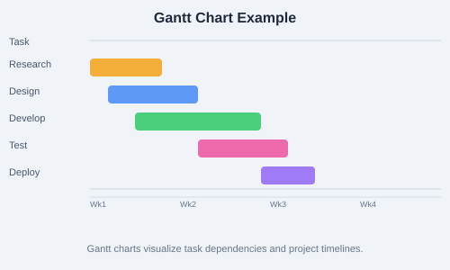

A Gantt chart visualizes project tasks against a timeline. Each task is represented by a bar showing its start date, end date, and duration. Dependencies between tasks are shown with arrows. Modern tools like Microsoft Project, Smartsheet, and Jira create Gantt charts automatically.

Figure: Sample Gantt chart with five sequential project phases.
Critical Path Method (CPM)
The Critical Path is the longest sequence of dependent tasks that determines the project's minimum duration. Any delay on the critical path directly delays the project. Steps to find it:
List all tasks and their durations
Identify dependencies between tasks
Calculate Early Start (ES), Early Finish (EF), Late Start (LS), Late Finish (LF)
Calculate float/slack: Float = LS - ES
Tasks with zero float are on the critical path
PERT (Program Evaluation and Review Technique)
PERT uses three time estimates to handle uncertainty:
Optimistic (O)  Best-case scenario
Pessimistic (P)  Worst-case scenario
Most Likely (M)  Normal scenario
Expected time: TE = (O + 4M + P) / 6
Critical Chain Method
Focuses on resource constraints rather than task dependencies. Adds buffers (project buffer, feeding buffers) to protect the critical chain from delays caused by resource contention.
Leads, Lags, and Floats
Lead  A task can start before its predecessor finishes (overlap)
Lag  A delay between dependent tasks
Float (Slack)  Amount of time a task can be delayed without affecting the project
Monte Carlo Analysis
Simulates thousands of possible project outcomes by varying task estimates based on probability distributions. Provides a range of possible completion dates with confidence levels (e.g., "85% probability of finishing by June 30").
Practice Task: Create a list of 8 tasks for a small project (e.g., launching a website). Assign durations, identify dependencies, draw a Gantt chart, and identify the critical path. Calculate float for non-critical tasks. Apply PERT to one uncertain task using optimistic, pessimistic, and most likely estimates.